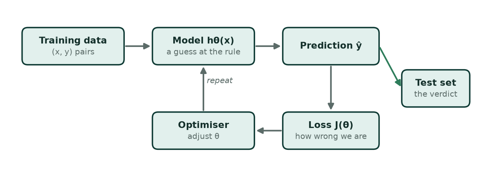
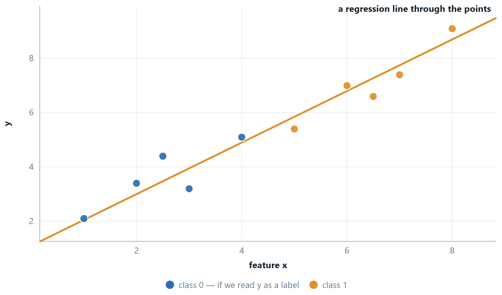
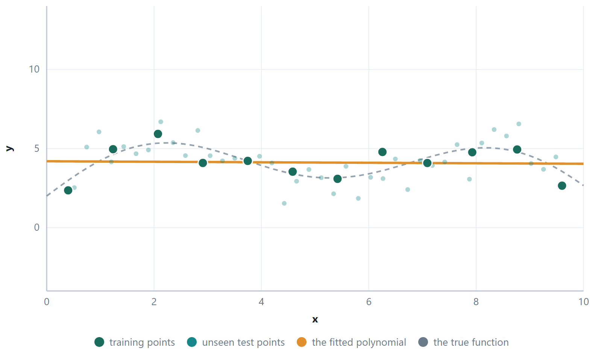
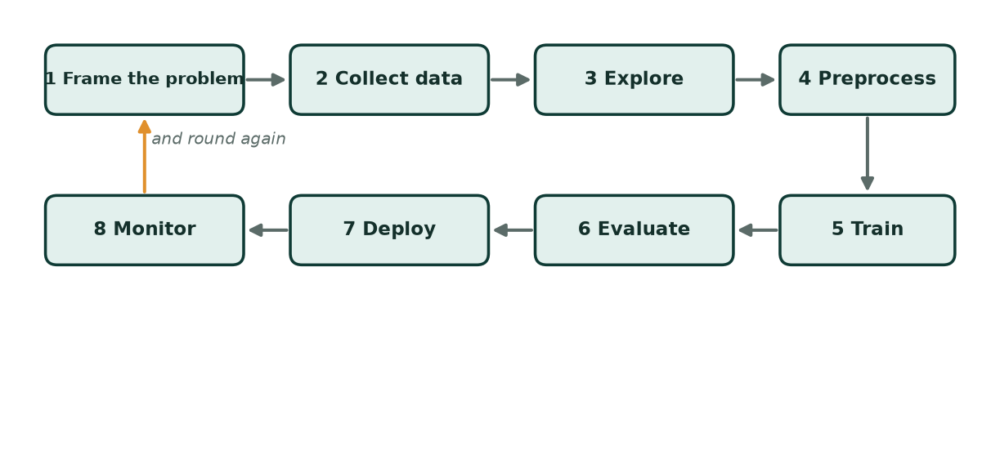

Chapter 1: Introduction: Learning from Data¶
Ordinary programming works by explicit instruction. You study a problem, work out the rules yourself, and write them down. To separate spam from real mail that way you might begin with if "lottery" in subject: mark_as_spam(). That works for a dozen obvious cases and then falls apart. Spammers change their words. Genuine mail mentions transfers and prizes. The rulebook grows into a thicket nobody can maintain, and it is still wrong.
Machine learning turns this around. You do not write the rules. You supply examples instead — thousands of messages already marked spam or not — and an algorithm works the rules out for itself. You write the recipe for learning; the data supplies the specifics. That is the whole inversion, and everything in this course is a variation on it.
One warning before you start, because it decides how you should read every later unit. A model that reproduces its training data perfectly has proved nothing. A lookup table can do that. The only question that matters is how the model behaves on data it has never seen. That property is called generalisation, and everything that looks like decoration in this course — splitting the data, regularisation, cross-validation, pruning — exists to protect it.
Learning outcomes of Unit 1
- Say precisely what distinguishes machine learning from ordinary programming, and state Mitchell's \(T / P / E\) definition for a system you have just been described.
- Name the parts of a learning problem — instance, feature, label, model, hypothesis space, parameter, hyper-parameter, loss, generalisation — and point to each one in a real dataset.
- Classify any task as supervised (classification or regression), unsupervised (clustering or dimensionality reduction) or reinforcement learning, and defend the choice.
- Explain why training error is not evidence of anything, and diagnose underfitting and overfitting from a pair of error numbers.
- Lay out the end-to-end pipeline from raw data to a deployed model, and say what goes wrong if any two steps are swapped.
1.1 What machine learning is¶
There is a famous informal definition, usually credited to Arthur Samuel. In 1959 he wrote a checkers program that got better than he was by playing itself, and he described the field as the study that gives computers the ability to learn without being explicitly programmed. It is a good slogan and a poor specification — it does not tell you what to build or how to tell whether it worked. Tom Mitchell's 1997 version does.
Definition: Mitchell's definition of learning
A computer program is said to learn from experience \(E\) with respect to some class of tasks \(T\) and performance measure \(P\), if its performance at tasks in \(T\), as measured by \(P\), improves with experience \(E\).
The value of this definition is that it forces you to name three things, and naming them turns a wish into an engineering problem. “Build something that detects fraud” is a wish. The three-part version is a specification you can start work on tomorrow.
| Spam filter | Handwriting recognition | Flat-price predictor | |
|---|---|---|---|
| \(T\) — the task | label an incoming email spam / not spam | identify which digit 0–9 an image shows | predict the sale price of a flat |
| \(P\) — the measure | fraction of mail classified correctly, or recall on spam at a fixed false-alarm rate | percentage of digits recognised correctly | root mean squared error in lakhs |
| \(E\) — the experience | a corpus of mail users have already marked | 60 000 labelled digit images | 12 000 past sales with area, rooms, locality |
Key idea
If you cannot state \(P\), you cannot tell whether the system is improving, and you have no way to choose between two models. Half the disasters in applied machine learning are not modelling failures at all — they are projects that optimised a P nobody had thought about carefully. A cancer screen with 99% accuracy on a population where 1% have cancer may be detecting nothing whatsoever.
| Traditional programming | Machine learning |
|---|---|
| A human studies the problem and works out the rules. | The rules are unknown, or too many to write down. |
| Rules + data go in; answers come out. | Data + answers go in; a model comes out. |
| Every case must be anticipated in advance. | Cases nobody anticipated are handled by generalisation. |
| Behaviour is fully inspectable: you can read the rule. | Behaviour may be opaque — a neural network is not a rule you can read. |
| Changing the world means rewriting the code. | Changing the world means retraining on new data. |
| Right when the rules are genuinely known — payroll, tax, a compiler, a sorting routine. | Right when patterns exist, are hard to hand-code, and data is available — spam, faces, speech, demand. |
The third bullet on each side is the honest trade. A rule-based system is exactly as good as the rules you wrote, and no better; a learned model can handle a case you never imagined, and can also fail on one for reasons you cannot see.
When is machine learning the right tool?
Three conditions have to hold together. A pattern exists — there is some real relation between the inputs and the target, otherwise you are fitting noise. You cannot write it down — if you can, write it down; a rule is faster, cheaper and auditable. Data is available — enough examples, of the right kind, with labels if the task is supervised. If all three hold, learning is likely the best available tool. If any fails, it is the wrong one.
AI, machine learning, deep learning, data science¶
These four names are used loosely in public and precisely in exams, so it is worth fixing them. Artificial intelligence is the broadest: any technique that makes machines behave in ways we would call intelligent, rule-based expert systems and search algorithms included. Machine learning is the subset of AI in which the behaviour is learned from data rather than programmed. Deep learning is a subset of machine learning that uses neural networks with many layers, which learn the features as well as the model. Data science is not a subset of anything — it is a wider practice of getting value out of data, using machine learning as one tool alongside statistics, databases, visualisation and domain knowledge.
1.2 The anatomy of a learning problem¶
Every algorithm in Units 2 to 5 is assembled from the same handful of parts. Learn the parts once here and each new algorithm becomes a rearrangement of things you already know rather than a fresh subject.
A dataset, with everything named
| # | area (sq ft) | bedrooms | age (years) | price (lakh) |
|---|---|---|---|---|
| 1 | 1 100 | 2 | 8 | 62 |
| 2 | 1 450 | 3 | 3 | 91 |
| 3 | 900 | 2 | 15 | 48 |
| 4 | 1 800 | 4 | 1 | 128 |
| … | … | … | … | … |
- Instance / example — one row. Row 4 is one example, written \(x^{(4)}\) together with its answer \(y^{(4)}\).
- Feature — one input column. Here there are \(n = 3\) features. The price column is the target, not a feature; miscounting this is the single commonest slip in the first month of the course.
- Feature vector — one row's features taken together: \(x^{(4)} = (1800, 4, 1)\). It is a point in a 3-dimensional feature space, and thinking of examples as points in space is what makes k-NN, k-means and SVM intuitive later.
- Target / label — the answer column \(y\). Continuous \(\to\) regression; categorical \(\to\) classification.
- \(m\) — the number of examples. \(n\) — the number of features. The design matrix \(X\) is therefore \(m \times n\).
Definition: Model, hypothesis and hypothesis space
A model (or hypothesis) \(h_{\theta }\) is a function that maps a feature vector to a prediction: \(\hat{y} = h_{\theta }(x)\). The hypothesis space \(H\) is the set of all functions the algorithm is allowed to consider — for example, every straight line, or every decision tree of depth \(\le 4\). Learning is a search of \(H\) for the member that fits the data best.
the hypothesis for the table above: choose \(\theta\), and you have chosen a model
- Parameters \(\theta\) are learned from the data — the four numbers above. You never set them by hand.
- Hyper-parameters are set before learning and control how learning happens: the learning rate \(\alpha\), the \(k\) in k-NN, the depth of a tree, the \(\lambda\) of a regulariser. They are chosen on a validation set, never on the test set.
- Loss measures how wrong one prediction is; cost \(J(\theta )\) is the loss averaged over the training set. Fitting means finding the \(\theta\) that minimises \(J\).
- Training is the search for \(\theta\). Inference is using the fixed \(\theta\) on new data. They have wildly different costs: training a large model can take days, inference milliseconds — except for k-NN, which reverses this and does all its work at inference.

- Training data ((x, y) pairs). \(m\) examples, each an n-dimensional feature vector with its known answer. This is the experience \(E\).
- Model hθ(x) (a guess at the rule). A function with adjustable parameters \(\theta\). Choosing the family of function — line, tree, network — fixes the hypothesis space, and that choice is the inductive bias.
- Prediction ŷ. What the current parameters say the answer is for each training example.
- Loss J(θ) (how wrong we are). A single number summarising the gap between \(\hat{y}\) and \(y\) over the whole training set. This is the thing that gets minimised.
- Optimiser (adjust θ). Gradient descent, or a closed-form solution. It changes \(\theta\) in the direction that lowers \(J\), then the loop repeats.
- Test set (the verdict). Data held out from the very beginning and never used for fitting or tuning. Performance here is the only honest estimate of how the model will behave in the world.
1.3 The three paradigms¶
Almost every problem you will meet falls into one of three families, and the family is decided by what the data contains, not by the subject matter. Medicine, finance and images appear in all three.
Supervised learning — every example carries its answer¶
You are given pairs (x, y) and asked to learn the mapping. The word supervised refers to the labels acting as a teacher: for each input the correct output is known while training, so the model's error can be measured directly.
Classification — \(y\) is a category. Spam or not; benign or malignant; the digit 0–9. The model carves the feature space into regions, and the surface between them is the decision boundary. Units 4 is entirely about this.
Regression — \(y\) is a number on a continuous scale. Price, temperature, demand, days of stay. The model is a surface through the points rather than a fence between them. Unit 3 is entirely about this.

Unsupervised learning — no answers at all¶
You are given only \(x\). There is no \(y\) to be right or wrong about, so the algorithm has to find structure that is already there.
- Clustering — group similar examples. Customer segments, document topics, gene-expression groups. Unit 5.
- Dimensionality reduction — describe the same data with fewer numbers, by finding the directions along which it actually varies. PCA, in Unit 2.
- Association rule mining — find items that co-occur, the “customers who bought this also bought” pattern. Outside this syllabus, but part of the family.
Evaluating unsupervised results is genuinely harder, because there is no answer key to compare against. That difficulty is not a detail; it is the defining feature of the paradigm, and Unit 5 spends real time on it.
Reinforcement learning — learning from consequences¶
An agent takes actions in an environment, which returns a reward and a new state. There is no dataset of correct actions; there is only the reward, often arriving long after the action that earned it. A robot learning to walk, a program learning Go by self-play, an advertising system learning what to show. The characteristic difficulty is credit assignment — which of the two hundred moves you made was the one that won the game? — and the characteristic trade-off is exploration versus exploitation: try something new, or repeat what has worked?
The distinction that is actually tested
Do not classify by domain. “Medical data” is not a paradigm. Ask instead: does the training data contain the answers? If yes \(\to\) supervised, then ask whether the answer is a category or a number. If no \(\to\) unsupervised. If there is no fixed dataset at all, only a stream of actions and rewards \(\to\) reinforcement. A fourth case worth knowing: semi-supervised learning, where a small labelled set is combined with a large unlabelled one — which is the realistic situation far more often than the tidy textbook version, because labelling is expensive and raw data is cheap.
| Supervised | Unsupervised | Reinforcement |
|---|---|---|
| Data: (x, y) pairs | Data: \(x\) only | Data: states, actions, rewards |
| Goal: learn \(x \to y\) | Goal: find structure | Goal: a policy that maximises long-run reward |
| Feedback: the correct answer, for every example | Feedback: none | Feedback: delayed and evaluative, not instructive |
| Classification: spam, digits, diagnosis | Clustering: segments, topics | Games, robotics, control |
| Regression: price, demand, temperature | Dimensionality reduction: PCA | Explore vs exploit is the central tension |
| Evaluated against held-out labels | Evaluated indirectly — WCSS, silhouette, or a human | Evaluated by total reward earned |
1.4 Generalisation, and the two ways to fail¶
A student who memorises last year's question paper scores brilliantly on last year's question paper. Whether they have learned any physics is a separate question, and the only way to find out is to hand them a paper they have not seen. Machine learning has exactly this problem, and exactly this remedy.
Definition: Generalisation
A model generalises if it performs well on data drawn from the same distribution as the training data but not used for training. The gap between training performance and test performance is the generalisation gap, and it is the number that tells you whether learning happened or memorising did.
Two failures sit at opposite ends of one scale.
Underfitting (high bias)
— the hypothesis space is too small to contain any good answer. A straight line through a curve. Training error is already high, and test error is no better. More data does not help; you need a more flexible model or better features.
Overfitting (high variance)
— the hypothesis space is rich enough to fit the noise as well as the signal. Training error is tiny, test error is large, and the gap between them is the symptom. Cures: more data, fewer parameters, regularisation, early stopping.

Notice what the degree of the polynomial is really controlling: the size of the hypothesis space. A degree-1 space contains only straight lines. A degree-10 space contains every degree-10 polynomial, including some that pass through all twelve points exactly. Richer is not better — a hypothesis space large enough to fit anything tells you nothing when it fits your data, because it would have fitted random data just as well.
Key idea — inductive bias
Infinitely many functions pass through any finite set of points. To choose one, an algorithm must prefer some functions over others before it sees any data at all, and that preference is its inductive bias: linear regression prefers straight lines, decision trees prefer axis-parallel boxes, k-NN prefers that nearby points share a label. Learning without a bias is impossible, not merely difficult — this is the content of the no free lunch theorem, which says that averaged over all possible problems, every algorithm is equally good. There is no best algorithm; there is only a bias that suits your problem.
1.5 The pipeline, end to end¶
An applied project is not one step but eight, and the modelling step — the one this course spends most of its time on — is rarely the one that decides success.

- 1 Frame the problem. What exactly is being predicted, from what, and what does a mistake cost? Fix \(T\) and \(P\) before touching data. A model optimised for the wrong \(P\) is worse than no model, because it will be trusted.
- 2 Collect data. Gather examples that resemble the ones the model will meet in production. Data collected under different conditions than deployment is the deepest and least visible source of failure.
- 3 Explore. Plot everything. Distributions, correlations, missing values, impossible values. Ten minutes of plotting saves a week of debugging a model that was fitting a data-entry error.
- 4 Preprocess. Clean, encode, scale, select, reduce. Unit 2 in full. Split FIRST, then fit every transformation on the training part alone.
- 5 Train. Choose a model family, fit the parameters, tune the hyper-parameters on a validation set or by cross-validation. Units 3, 4 and 5.
- 6 Evaluate. On the held-out test set, with a metric that matches what a mistake actually costs. Compare against a trivial baseline — the majority class, or the mean — and report both.
- 7 Deploy. The model now meets data nobody curated. The preprocessing must travel with it, identically; a scaler fitted at training time must be the one used at prediction time.
- 8 Monitor. Distributions drift, behaviour changes, the model itself changes the world it predicts. Watch the live metric, and retrain when it slips. A model is a perishable good.
Definition: Train, validation, test
The data is cut three ways. The training set fits the parameters. The validation set chooses the hyper-parameters and the model family. The test set is opened once, at the end, to report a number. A typical split is \(60 / 20 / 20\), or \(80 / 20\) with k-fold cross-validation carving the validation set out of the training part.
The test set is not a leaderboard
If you look at the test score, change the model, and look again, you have begun tuning on the test set, and it has quietly become a validation set. The number you eventually report will be optimistic by an amount nobody can estimate. This mistake is easy, invisible, and made by nearly everyone once.
# the split, which everything else in this course depends on
from sklearn.model_selection import train_test_split
X_tr, X_te, y_tr, y_te = train_test_split(
X, y,
test_size=0.2, # 20% held back and not looked at until the end
random_state=42, # so the split is the same every run — reproducibility
stratify=y) # keep the class proportions in both halves
print(X_tr.shape, X_te.shape) # (m_train, n) (m_test, n)
print(y_tr.mean(), y_te.mean()) # with stratify, these two agree
Three arguments, three ideas from this unit. test_size is the train/test split itself; random_state is what makes a result you can defend in a viva rather than one that changes on every run; and stratify matters the moment a class is rare — without it a 2% positive class can land almost entirely in one half.
1.6 Where it is actually used¶
- Healthcare. Tumour detection in scans (classification), length-of-stay prediction (regression), patient sub-typing (clustering). The metric is almost never accuracy — a missed tumour and a false alarm cost wildly different things, so recall at a controlled false-positive rate is the number that matters.
- Finance. Credit scoring, fraud detection, algorithmic trading. Fraud is the textbook imbalanced problem: perhaps 0.1% of transactions, so a model that says “genuine” every time is 99.9% accurate and worthless.
- Retail and web. Recommendation, demand forecasting, customer segmentation, churn prediction. Segmentation is unsupervised; churn is supervised classification; demand is regression — one business, all three paradigms.
- Vision and speech. Face recognition, OCR, speech to text, self-driving perception. These are the tasks where deep learning displaced hand-designed features entirely, because nobody could write down what a cat looks like as a rule.
- Agriculture and public data. Yield prediction from soil and weather, disease detection from leaf photographs. India's data.gov.in and the UCI repository are the sources this course's practicals draw on.
- And where it should not be used. When the rule is known and simple; when a wrong answer must be explainable in a court; when the training data encodes a historical injustice that the model will then reproduce at scale and with an air of objectivity.
1.7 Further topics¶
A short history, and why now¶
The ideas in this course are older than most of its users. In the 1950s Turing wrote of "learning machines", and Arthur Samuel's checkers program, which improved by playing itself, gave the field its name in 1959. Rosenblatt's perceptron (1957 onwards) was the first trainable classifier; its limits, set out by Minsky and Papert at the end of the 1960s, helped bring on the first "winter" in artificial-intelligence research, a period in which funding and interest fell away. The 1980s and 1990s brought back-propagation into wide use, together with decision trees, support vector machines and a statistical view of learning that made machine learning a rigorous, data-driven discipline. A revival of neural networks around 2006 to 2012 (called deep learning, because the networks have many layers) reached public attention when AlexNet won the ImageNet image-recognition contest in 2012; since 2016, systems such as AlphaGo (reinforcement learning) and large language models have reached or passed human performance on hard tasks.
| Period | Milestone | Why it matters |
|---|---|---|
| 1950s | learning machines; Samuel's checkers program; the name "machine learning" (1959) | programs can improve with experience |
| 1957–69 | the perceptron; its limits exposed | first trainable classifier, and the first winter |
| 1980s–90s | back-propagation; trees, SVMs; statistical learning | a rigorous, data-driven discipline |
| 2006–12 | deep-learning revival; AlexNet (2012) | neural networks leap ahead in vision and speech |
| 2016 onwards | AlphaGo; large language models | super-human performance on some hard tasks |
If the theory is decades old, why did machine learning take off only recently? Three forces arrived together. Data grew explosively, from the web, sensors and phones. Compute became cheap and parallel, with graphics processors and cloud services. Software improved, with open libraries such as scikit-learn, TensorFlow and PyTorch that put good algorithms in anyone's hands. The recipe was known; the fuel and the engine were recent.
What the learner does not do for you¶
A common misconception is that "the computer programs itself" with no human effort. Machine learning automates one thing, the discovery of rules from examples. People still choose the task, collect and clean the data, decide which features and which model family to use, tune the settings and judge the results. "Garbage in, garbage out" holds with more force here than almost anywhere in computing: a flexible learner trained on mislabelled or unrepresentative data will learn the mistakes faithfully. This is why Chapter 2 is devoted to preparing the data, and why the pipeline in Section 1.5 has eight steps and only one of them is "train".
Reinforcement learning: the vocabulary¶
Section 1.3 named the agent, the environment, the reward and the exploration trade-off. Reinforcement learning has four more terms, and exams ask for all of them.
At each step the agent observes a state \(s_{t}\) (a description of the current situation), chooses an action \(a_{t}\), and the environment replies with a reward \(r_{t+1}\) and a new state \(s_{t+1}\). The agent's strategy, a rule that maps states to actions, is its policy \(\pi\): "in this position, make that move". Learning means improving the policy so as to maximise not the next reward but the return, the total of all future rewards, usually discounted so that rewards far in the future count for less:
For example, with \(\gamma = 0.9\) a game that gives \(0\) for two moves and \(+10\) for winning on the third has return \(0 + 0.9 \times 0 + 0.9^{2} \times 10 = 8.1\). The return, not the single reward, is what makes a quiet, patient move worth making, and it is why credit assignment is hard: the \(+10\) arrives only at the end, and the learner must work out which of the earlier moves earned it.
| Term | Self-driving delivery robot | Game-playing program |
|---|---|---|
| agent | the controller | the program |
| environment | the roads, traffic and pedestrians | the game and its rules |
| state | a snapshot of the sensor readings | the current board position |
| action | steer, accelerate, brake | a legal move |
| reward | positive for progress, negative for a collision | \(+1\) for a win, \(-1\) for a loss, \(0\) otherwise |
| policy | the rule from sensor snapshot to action | the rule from position to move |
The dilemma of exploration versus exploitation deserves one picture. Each evening you can go to the restaurant you know is good (exploit) or try a new one that might be better or worse (explore). Someone who only exploits never discovers a better favourite; someone who only explores eats many poor meals. Good agents explore a lot early, when they know little, and settle down as they learn.
Association rules¶
The third task of unsupervised learning, besides clustering and dimensionality reduction, looks for items that occur together. A rule such as \(\{\text{bread}, \text{butter}\} \Rightarrow \{\text{jam}\}\) says that baskets containing bread and butter often contain jam too. Two numbers describe a rule. Its support is the fraction of all baskets that contain every item in it; its confidence is the fraction of baskets containing the left-hand side that also contain the right-hand side.
| Basket | Items |
|---|---|
| 1 | bread, butter, jam |
| 2 | bread, butter |
| 3 | bread, butter, jam, milk |
| 4 | milk |
| 5 | bread, jam |
Three of the five baskets hold bread and butter, and two of those also hold jam. So the support of the rule is \(2/5 = 0.40\) and its confidence is \(2/3 \approx 0.67\). Nobody told the algorithm to look for bread and jam; the pattern surfaced from the records alone, which is what makes this an unsupervised task. Market-basket analysis and recommendation use it; the course returns to it no further.
1.8 Worked examples¶
The examples below work through the calculations of this chapter in full. Try each one on paper before reading the steps.
Example 1.1: Turning a wish into a specification
Problem. A college wants to “use AI to reduce dropouts”. Turn this into a well-posed learning problem, naming T, P and \(E\), and say which paradigm it belongs to.
Step 1 — decide what is being predicted, and when
“Reduce dropouts” is an action, not a prediction. The predictable quantity is whether a given student will fail to enrol next semester, and it must be predicted early enough to act on — say, by the end of week six. That timing constraint also decides which features are allowed: anything not available in week six cannot be used, however predictive it is.
Step 2 — \(T\)
Given a student's attendance, internal marks, fee-payment status and prior academic record as of week six, classify them as at risk or not at risk of not enrolling next semester. Two categories, so this is supervised classification.
Step 3 — \(P\), chosen from the cost of each mistake
A false negative is a student who drops out unnoticed — the failure the project exists to prevent. A false positive is a mentoring conversation with someone who was fine, which costs an hour. The costs are wildly asymmetric, so accuracy is the wrong measure. Use recall on the at-risk class, reported at a false-positive rate the mentoring staff can absorb. If 200 students can be contacted, the real question is what fraction of true dropouts appear in the top 200 by risk score.
Step 4 — \(E\)
Records of past students, each with the week-six features and the known outcome. Note the labels take a semester to arrive, so the dataset can only be built from history.
Answer. \(T\): classify a student at week six as at-risk / not. \(P\): recall on at-risk at a fixed number of contacts. \(E\): past students' week-six features with known outcomes. Supervised classification.
Comment. Everything hard about this problem appeared before any algorithm was mentioned — the timing, the asymmetric costs, the label delay. That is typical.
Example 1.2: Counting the parts of a dataset
Problem. A CSV has 5 000 rows and 13 columns. One column is a unique student ID, one is the final grade (A–F) to be predicted, and one is 80% empty. State \(m\) and \(n\), name the target type, and say what you would do with the ID and the sparse column.
Step 1 — \(m\) and \(n\)
\(m = 5 000\) examples. Of the 13 columns, one is the target and one is an identifier, leaving 11 candidate features — so \(n = 11\), not 13 and not 12.
Step 2 — the target
A–F is categorical and ordered, so this is classification with six classes — multi-class, not binary. The ordering is real information: predicting B when the truth is A is a smaller error than predicting \(F\), and a plain multi-class classifier will not know that. Either accept the loss of that information or use an ordinal method.
Step 3 — the ID column
Drop it. An identifier is unique per row, so a flexible model can use it to memorise the training set perfectly and will learn nothing that transfers. Tree-based models are especially prone to this. IDs also often encode admission order or batch, which leaks information that will not exist for a future student.
Step 4 — the 80%-empty column
Three options, in order of preference. Drop it if the remaining 20% is not clearly informative. Keep it with an explicit “missing” indicator if the fact of being missing is itself meaningful — an unfilled optional field may say a great deal. Impute only if the missingness is plausibly random; imputing 80% of a column mostly manufactures a constant, and the imputation value must be computed on the training fold alone.
Answer. \(m = 5 000, n = 11\) usable features; six-class ordinal classification; drop the ID; drop or flag the sparse column.
Example 1.3: Reading two error numbers
Problem. Three models are trained on the same data. Their errors are: A — train 0.42, test 0.44; B — train 0.02, test 0.39; \(C\) — train 0.11, test 0.13. Which would you deploy, and what would you try next for the other two?
Step 1 — read the gaps
A: both high, gap \(\approx 0\). B: training near zero, gap 0.37. \(C\): both low, gap 0.02.
Step 2 — diagnose
A is underfitting: it cannot even fit the data it was shown, so the model is too rigid or the features carry too little signal. B is overfitting: perfect on what it saw, poor on what it did not. \(C\) generalises.
Step 3 — act
Deploy \(C\). For A: a richer model, polynomial or interaction features, less regularisation. For B: more training data, fewer parameters, stronger regularisation, early stopping, or pruning if it is a tree.
Answer. Deploy \(C\). A underfits — add capacity. B overfits — restrain it.
Comment. Note that B has the best training error of the three and is the worst model. Reporting training error is not merely uninformative; it points the wrong way.
Example 1.4: Which paradigm, and which kind of task?
Problem. For each scenario say whether it is supervised, unsupervised or reinforcement learning. For the supervised ones, say whether the task is regression or classification, and whether a classification is binary or multi-class.
| Scenario | |
|---|---|
| (a) | Predict a flat's sale price from its size, locality and age, using 5 000 past sales with their prices. |
| (b) | Group 10 000 news articles by topic when no topic labels exist. |
| (c) | A robot learns to walk by trying movements and receiving a reward for distance covered. |
| (d) | Flag a card transaction as fraud or not fraud, using past transactions that have been labelled. |
| (e) | Detect unusual readings from factory sensors when no example of "unusual" is available. |
| (f) | Predict how many customers will visit a shop tomorrow. |
| (g) | Decide whether a photograph shows a cat, a dog or a horse. |
| (h) | Predict the PIN-code area (a six-digit number) of a delivery address from the text of the address. |
Step 1 — ask the three questions, in this order
- Does the training data contain the answer for every example? If yes, the problem is supervised.
- If not, is there a stream of actions that earn rewards, with no fixed dataset? If yes, it is reinforcement learning.
- If neither, there are only inputs, and the task is to find structure: unsupervised.
For a supervised problem, one more question: is the target a quantity on a numeric scale (regression) or a member of a finite set of categories (classification)?
Step 2 — apply them
| Labels? | Target | Paradigm and task | |
|---|---|---|---|
| (a) | yes, the price | continuous number | supervised, regression |
| (b) | no | none | unsupervised, clustering |
| (c) | no; only a reward | none | reinforcement (agent = robot, reward = distance) |
| (d) | yes, fraud / not | two categories | supervised, binary classification |
| (e) | no labelled anomalies | none | unsupervised, anomaly detection (find points unlike the rest) |
| (f) | yes, past counts | a count, treated as a quantity | supervised, regression |
| (g) | yes, the animal | three unordered categories | supervised, multi-class classification |
| (h) | yes, the area code | numbers used only as names | supervised, multi-class classification |
Step 3 — the two cases that tempt a wrong answer
In (f) a count is technically discrete, but it is an ordered quantity with a meaningful size, and a prediction of 41 when the truth is 40 is nearly right. That is regression. In (h) the target is written as a number, but "twice the PIN code" and "halfway between two PIN codes" mean nothing, so the numbers are labels. The test is whether twice and in between make sense for the target.
Answer. (a) supervised regression; (b) unsupervised clustering; (c) reinforcement; (d) supervised binary classification; (e) unsupervised; (f) supervised regression; (g) supervised multi-class classification; (h) supervised multi-class classification.
Comment. Scenario (e) would become supervised classification the moment a set of labelled faults existed. The paradigm is decided by what the data contains, not by the application.
Example 1.5: Reading a hypothesis — features, label, parameters, and one prediction
Problem. A bank records, for each applicant, annual income (in lakh), loan amount (in lakh), credit score and years in current employment, and whether the applicant later defaulted (yes or no). A student proposes
Name the features, label, hypothesis and parameters; give \(n\); say what \(m\) is; and evaluate the hypothesis for two applicants using the illustrative values \(\theta = (-1,\,-0.15,\,0.2,\,-0.004,\,-0.1)\).
Step 1 — match each name to the problem
| Term | In this problem |
|---|---|
| features \(x\) | income, loan amount, credit score, years employed |
| label \(y\) | defaulted, coded 1 for yes and 0 for no |
| hypothesis \(h_{\theta }\) | the formula above, mapping a feature vector to a number in \((0, 1)\) |
| parameters \(\theta\) | \(\theta _{0}, \theta _{1}, \theta _{2}, \theta _{3}, \theta _{4}\) |
| \(n\) | 4 |
| \(m\) | the number of applicants in the training set |
There are \(n + 1 = 5\) parameters, because every feature has a weight and the intercept \(\theta _{0}\) is the extra one. The features are data we are given; the parameters are numbers the algorithm chooses. The sigmoid \(\sigma\) squeezes the output into \((0, 1)\), which is why this is a classification hypothesis (a probability of default) rather than plain linear regression.
Step 2 — applicant 1: income 6, loan 10, score 650, 4 years
With \(x_{0} = 1\) for the intercept,
\(z = -1 + (-0.15)(6) + (0.2)(10) + (-0.004)(650) + (-0.1)(4)\)
\(z = -1 - 0.9 + 2.0 - 2.6 - 0.4 = -2.9\)
\(h_{\theta }(x) = 1/(1 + e^{2.9}) = 0.052\)
Step 3 — applicant 2: income 3, loan 14, score 520, 1 year
\(z = -1 + (-0.15)(3) + (0.2)(14) + (-0.004)(520) + (-0.1)(1)\)
\(z = -1 - 0.45 + 2.8 - 2.08 - 0.1 = -0.83\)
\(h_{\theta }(x) = 1/(1 + e^{0.83}) = 0.304\)
Step 4 — turn probabilities into decisions
With the usual threshold of \(0.5\), both applicants are predicted not to default. The signs are sensible: a larger loan raises the risk, while a higher income, score and employment record lower it. The threshold is itself a choice: if a missed default costs far more than a rejected good applicant, a threshold of \(0.25\) would flag applicant 2 and not applicant 1.
Answer. Features: income, loan, score, years (\(n = 4\)). Label: default indicator. Parameters: five numbers \(\theta _{0}, \dots , \theta _{4}\). \(m\) is the number of applicants in the training set. Predicted probabilities of default: \(0.052\) and \(0.304\).
Comment. The values of \(\theta\) here were chosen for illustration; in practice they are found by minimising a loss on the training set (Chapter 8). Notice also that no number in the table of features is a parameter, and no parameter appears in the data.
Example 1.6: The cost of a hypothesis, and what fitting means
Problem. Study hours \(x\) and test scores \(y\) for three students are \((1, 2), (2, 2), (3, 4)\). Using \(J(\theta ) = \dfrac{1}{2m}\sum _{i=1}^{m}\left(h_{\theta }(x^{(i)}) - y^{(i)}\right)^{2}\), compute the cost of (i) \(h(x) = x\) and (ii) \(h(x) = 0.5 + x\). Then find the line with the smallest cost.
Step 1 — set up the table for \(h(x) = x\)
Here \(m = 3\).
| \(x\) | \(y\) | \(h(x) = x\) | error \(h - y\) | error\(^{2}\) |
|---|---|---|---|---|
| 1 | 2 | 1 | \(-1\) | 1 |
| 2 | 2 | 2 | 0 | 0 |
| 3 | 4 | 3 | \(-1\) | 1 |
Sum of squared errors \(= 1 + 0 + 1 = 2\), so \(J = \dfrac{2}{2 \cdot 3} = \dfrac{1}{3} = 0.333\).
Step 2 — the line \(h(x) = 0.5 + x\)
| \(x\) | \(y\) | \(h(x)\) | error | error\(^{2}\) |
|---|---|---|---|---|
| 1 | 2 | 1.5 | \(-0.5\) | 0.25 |
| 2 | 2 | 2.5 | \(0.5\) | 0.25 |
| 3 | 4 | 3.5 | \(-0.5\) | 0.25 |
Sum \(= 0.75\), so \(J = \dfrac{0.75}{6} = 0.125\). Shifting the line up by \(0.5\) cut the cost from \(0.333\) to \(0.125\).
Step 3 — the best straight line
The least-squares line has slope \(\theta _{1} = \dfrac{\sum (x - \bar{x})(y - \bar{y})}{\sum (x - \bar{x})^{2}}\) and intercept \(\theta _{0} = \bar{y} - \theta _{1}\bar{x}\).
\(\bar{x} = 2, \ \bar{y} = 8/3\). The numerator is \((-1)(2 - 8/3) + (0)(2 - 8/3) + (1)(4 - 8/3) = 2/3 + 0 + 4/3 = 2\), and the denominator is \(1 + 0 + 1 = 2\).
\(\theta _{1} = 1, \quad \theta _{0} = 8/3 - 2 = 2/3\)
The errors of \(h(x) = \tfrac{2}{3} + x\) are \(-\tfrac{1}{3}, +\tfrac{2}{3}, -\tfrac{1}{3}\), with squares \(\tfrac{1}{9}, \tfrac{4}{9}, \tfrac{1}{9}\) and sum \(\tfrac{6}{9} = \tfrac{2}{3}\). Then \(J = \dfrac{2/3}{6} = \dfrac{1}{9} = 0.111\).
Answer. \(J = 0.333\) for \(h(x) = x\); \(J = 0.125\) for \(h(x) = 0.5 + x\); the best line is \(h(x) = \tfrac{2}{3} + x\) with \(J = \tfrac{1}{9} \approx 0.111\).
Comment. Each choice of \((\theta _{0}, \theta _{1})\) is one hypothesis, and each has its own cost: fitting is the search for the pair with the smallest \(J\). The cost of \(0.111\) is the best any straight line can do on these three points, not zero; the points do not lie on a line. Chapter 4 replaces this hand calculation with a formula and with gradient descent.
Example 1.7: Three disjoint sets, and why a rare class needs a stratified split
Problem. You have 1 000 labelled examples of which 20 (2%) are positive. You need to fit parameters, choose between three candidate models, and report an honest final accuracy. (i) Propose a split and say what each part is for. (ii) How many positives would a test set of 150 hold if the split were random? (iii) What goes wrong with a purely random split, and how is it avoided?
Step 1 — the split
Use three disjoint parts, for example \(700 / 150 / 150\) (that is \(70\%, 15\%, 15\%\), and \(700 + 150 + 150 = 1000\)).
| Part | Size | Used for |
|---|---|---|
| training | 700 | fitting the parameters \(\theta\) of each candidate model |
| validation | 150 | comparing the three models and tuning hyper-parameters |
| test | 150 | one final measurement, after every decision has been made |
The test set is used once. If it were used to choose among the three models, the winner would be the one that happened to suit those 150 examples, and its score on them would be optimistic. A set used to make a choice has become a validation set, and no honest estimate remains.
Step 2 — how many positives in the test set
On average, a test set of 150 from 1 000 examples holds \(150/1000 = 15\%\) of the positives: \(0.15 \times 20 = 3\).
Step 3 — the risk of a purely random split
The chance that a random draw of 150 contains no positive at all is
close to \((1 - 0.15)^{20} = 0.039\). So there is about a 1 in 27 chance that the test set contains no positive example and recall cannot even be computed. With 3 expected positives, a result of 1 or 6 is entirely plausible, and a recall measured on three cases can only be 0, 33%, 67% or 100%.
Step 4 — the remedy
A stratified split forces each part to keep the class proportions: each of the three parts receives its share of the 20 positives, so the 150-example test set holds \(20 \times 0.15 = 3\) positives every time, and the training set holds \(20 \times 0.70 = 14\). In scikit-learn this is the argument stratify=y.
Answer. Split \(700 / 150 / 150\) for fitting, choosing and reporting; stratify so each part keeps the 2% positive rate (14, 3 and 3 positives). A random split leaves about a 3.7% chance of no positive in the test set.
Comment. Even a perfectly stratified test set of 3 positives is a very small sample. The proper response to a rare class is a larger test set, or cross-validation, as well as a metric such as recall that looks at the rare class and not at overall accuracy.
1.9 Common mistakes to avoid¶
Each of the following is a mistake that costs marks in an examination or accuracy in practice.
- Do not count the target column as a feature. A table of 13 columns with one target and one ID has 11 features.
- Do not classify a problem by its domain. “Healthcare” is not a paradigm; the presence or absence of labels in the data is.
- Do not call a numeric target classification because it happens to be written as an integer. Predicting the number of days is regression; predicting which of five wards is classification.
- Do not report training accuracy as if it were a result. It is a diagnostic, and it can always be driven to 100% by memorising.
- Do not tune anything on the test set — not the model, not a threshold, not a hyper-parameter. Once you have looked at it twice, it is a validation set.
- Do not confuse parameters with hyper-parameters. \(\theta\) is learned; \(k, \alpha , \lambda\) and depth are chosen.
- Do not assume more data fixes everything. It cures overfitting; it does nothing at all for underfitting.
- Do not treat a model as finished when it is deployed. Distributions drift and accuracy decays, which is why step 8 exists.
- Do not say “the algorithm found a correlation, therefore \(X\) causes Y”. Every model in this course learns association. Causation requires an experiment or an argument, and no amount of accuracy substitutes for either.
1.10 Summary¶
After working through this chapter you should be able to do the following.
- Define machine learning against ordinary programming: rules and data go into one, data and answers go into the other. You can also state Mitchell's \(T / P / E\) for any system described to you. That is what turns a vague brief into something buildable.
- Name every part of a learning problem in a real table. There are \(m\) examples and \(n\) features, and one of the columns is the target. A row is a feature vector, which is a point in feature space. The model \(h_{\theta }\) is drawn from a hypothesis space. Parameters are learned; hyper-parameters are chosen. Loss is measured on one example, cost over the whole set. And training finds the parameters, while inference uses them.
- Place any task in one of three paradigms by asking what the data contains rather than what field it comes from, and you know the two sub-families of each: classification and regression; clustering and dimensionality reduction.
- Recall that the only meaningful measure of success is performance on unseen data, that underfitting shows as two high errors and overfitting as a wide gap, and that more data cures one and not the other.
- Explain why an algorithm must have an inductive bias before it sees any data, what the no-free-lunch theorem says about the search for a best algorithm, and therefore why this course teaches you a toolbox rather than a favourite.
- Lay out the eight-step pipeline, defend the three-way split of the data, and explain why the test set is opened exactly once.
1.11 Exercises¶
-
State \(T\), \(P\) and \(E\) for a system that predicts which of five bus routes a commuter will take tomorrow. Which paradigm, and why?
Answer
\(T\): given the day, the time and the weather, say which of the five routes the commuter will take. \(P\): the fraction of days on which the predicted route is the route actually taken. \(E\): a record of the commuter's past journeys, each with its day, time and weather and the route that was chosen. The paradigm is supervised multi-class classification: every past journey carries its answer (the route), and that answer is one of five unordered categories, not a number on a scale.
-
A dataset has 800 rows and 20 columns, of which one is the target and three are 80% empty. Give \(m\), the number of usable features under each of the three policies for a sparse column, and say which you would choose.
Answer
\(m = 800\). One column is the target, so there are \(19\) candidate features, three of which are sparse. Each of those has \(0.8 \times 800 = 640\) empty cells and only \(160\) filled ones.
- Drop the three sparse columns: \(19 - 3 = 16\) features.
- Impute them (for example with the training median): \(19\) features. Four-fifths of each column is then a manufactured constant.
- Impute and add a "was missing" indicator for each: \(19 + 3 = 22\) columns.
Unless there is a reason to think the fact of being missing is itself informative, drop them: the remaining 160 values are few, and imputing 640 cells mostly adds a constant. If missingness plausibly carries information (an optional form field left blank, say), use the imputed column together with its indicator, and let validation performance decide. Whichever policy is used, any imputation value must be computed on the training part alone.
-
Model A scores 0.95 training accuracy and 0.61 test accuracy; model B scores 0.72 and 0.70. Which is better, and what would you try next for each?
Answer
B is better, because test performance is what predicts behaviour on new data: \(0.70 > 0.61\). Model A's gap is \(0.95 - 0.61 = 0.34\), the signature of overfitting; model B's gap is only \(0.02\), so B generalises, but its training accuracy of \(0.72\) is itself modest, which suggests it is somewhat too rigid. For A: restrain it with fewer parameters, regularisation, early stopping or pruning, and more training data if available. For B: add capacity, with a richer model, extra or better-engineered features, or less regularisation.
-
A hospital's data has 2% positive cases. A model predicts "negative" always. Give its accuracy, precision and recall.
Answer
Take 1 000 patients: 20 are positive and 980 negative. The model gets all 980 negatives right and all 20 positives wrong, so it has \(TP = 0\), \(FN = 20\), \(FP = 0\), \(TN = 980\).
Accuracy \(= (0 + 980)/1000 = 98\%\). Recall \(= TP/(TP + FN) = 0/20 = 0\). Precision \(= TP/(TP + FP) = 0/0\), which is undefined, because the model never predicts a positive. The 98% accuracy is exactly the share of negatives, the baseline that any useful model must beat, and the model detects nothing.
-
Give one task from your own experience for each of the three paradigms, and say what data would have to exist for each.
Answer
Any well-chosen triple will do; here is one. Supervised: predict from a student's first three internal marks whether they will pass the course (classification); it needs past students' marks together with the pass or fail outcome. Unsupervised: group the books in a library by borrowing pattern; it needs only the loan records, with no category labels. Reinforcement: a thermostat that learns when to switch heating on to keep a room comfortable at low energy cost; it needs no dataset at all, but an environment it can act in and a reward that scores comfort and energy use after each action. In every case the test is what the data contains: answers, nothing, or rewards for actions.
-
Explain in three sentences why a hypothesis space that can fit any dataset is useless, referring to inductive bias.
Answer
A hypothesis space that can fit every possible dataset fits random noise as readily as it fits a real pattern, so a perfect fit to your data tells you nothing about whether a pattern exists. Learning from finitely many examples needs an inductive bias, an assumption that prefers some functions to others before any data are seen, because infinitely many functions pass through the same points and only the assumption chooses among them. A space with no such preference cannot choose, and one that merely memorises the training set will predict arbitrarily on every new input.
-
An engineer scales the whole dataset, splits it, trains and reports 94% test accuracy. Name the error and say in which direction the reported number is wrong.
Answer
The error is data leakage, through preprocessing: the scaling statistics (mean and standard deviation, or minimum and maximum) were computed from all rows, test rows included, so information about the test set entered the training pipeline. The test set was therefore not truly unseen, and the reported 94% is optimistic: the true accuracy on new data is likely to be lower (typically only slightly for scaling, much more for steps such as feature selection). The correct order is to split first, fit the scaler on the training part alone, and apply those stored numbers to both parts.
-
Why can training error not be used to choose between a degree-2 and a degree-9 polynomial, when test error can?
Answer
The degree-9 family contains every degree-2 polynomial (set the higher coefficients to zero), so its best fit to the training data can never be worse than the degree-2 best fit, and with noisy data it is almost always strictly better. Training error therefore falls as the degree rises, and would always select the most complex model, whether or not it has learned a real pattern. Test error is measured on points the fit did not see, so the degree-9 curve is penalised exactly where it has followed noise; it typically falls and then rises as the degree grows, and its minimum picks a degree that generalises. (In practice the choice is made on a validation set, and the test set is kept for the final report.)
-
Hours studied \(x\) and marks \(y\) are \((1, 3), (2, 4), (4, 8)\). For the hypothesis \(h(x) = 2x\), compute the cost \(J = \dfrac{1}{2m}\sum _{i}\left(h(x^{(i)}) - y^{(i)}\right)^{2}\), showing every step.
Answer
\(m = 3\). The predictions are \(h(1) = 2\), \(h(2) = 4\), \(h(4) = 8\). The errors \(h - y\) are \(2 - 3 = -1\), \(4 - 4 = 0\), \(8 - 8 = 0\), with squares \(1, 0, 0\). The sum of squared errors is \(1\), so
\[ J = \frac{1}{2 \cdot 3} \times 1 = \frac{1}{6} \approx 0.167. \]The line passes through two of the three points exactly and misses the first by one mark.
-
Classify each of the following as a parameter or a hyper-parameter, and say how its value is decided: (a) the slope of a fitted line; (b) the learning rate \(\alpha\); (c) the weights of a trained neural network; (d) \(k\) in k-NN; (e) the maximum depth of a decision tree; (f) the intercept \(\theta _{0}\).
Answer
(a) Parameter: learned by minimising the cost on the training data. (b) Hyper-parameter: set by the practitioner before training and tuned on a validation set. (c) Parameters: learned during training by gradient descent. (d) Hyper-parameter: chosen before the algorithm runs, by comparing validation performance for several values of \(k\). (e) Hyper-parameter: it fixes the size of the hypothesis space, and is chosen by validation or cross-validation. (f) Parameter: learned along with the slope. The rule: parameters are the numbers inside the fitted model that the algorithm finds; hyper-parameters control how the search is carried out or how rich the model may be, and are set from outside.
-
Name the learning paradigm in each case, with a one-sentence reason. (A1) A spam filter learns from thousands of emails already marked spam or not spam. (A2) A self-driving car learns to hold its lane through a reward for staying in lane and a penalty for swerving, without being told the correct steering angle. (A3) A news site groups articles into topics using only the words they contain, with no topic labels.
Answer
(A1) Supervised (binary classification): each training email carries its label. (A2) Reinforcement: an agent acts, receives only a reward or penalty, and learns a policy; no correct action is ever supplied. (A3) Unsupervised (clustering): only the inputs, the words, are available, and the groups must be discovered.
-
A bank trains a model to predict whether a loan will default. Among the input features is a column "amount recovered after default". What is wrong with it, what is the problem called, and what happens when the model is deployed?
Answer
The amount recovered after a default is known only after the outcome has happened, and it is non-zero only for loans that did default. It therefore carries the answer inside the inputs: this is data leakage, sometimes called label leakage. The model will appear near-perfect on the training and test data, because the leaked column nearly gives the label away. In deployment, when a new application is assessed, the column does not exist yet (nothing has been recovered from a loan that has not been made), so the model's main input is missing and its predictions are worthless. The remedy is to build features only from information available at the moment the prediction must be made.
-
A spam filter is retrained every month on the most recent emails with exactly the same procedure, yet over a year its test accuracy slowly declines. Give two plausible explanations rooted in this chapter and say how you would detect the problem.
Answer
(1) The data drift. Spammers change their wording and tactics, and ordinary language and mail patterns also change, so the distribution of the inputs and the relation between inputs and labels move away from what the model learned. The model is a perishable good, which is why monitoring is the last step of the pipeline. (2) The test set may no longer match the world, if it is a fixed old sample while the training data are always recent, or the other way round; in either case the measured number is about a different distribution from the one the model will meet. Other causes include a change in the labelling practice and spammers adapting to the filter itself. To detect it: track the live metric (recall on spam, false-positive rate) on fresh, freshly labelled mail, compare feature distributions (word frequencies, mail length) between months, and set an alert and a retraining trigger when either slips.